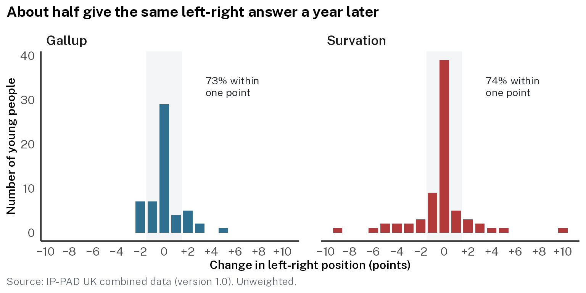
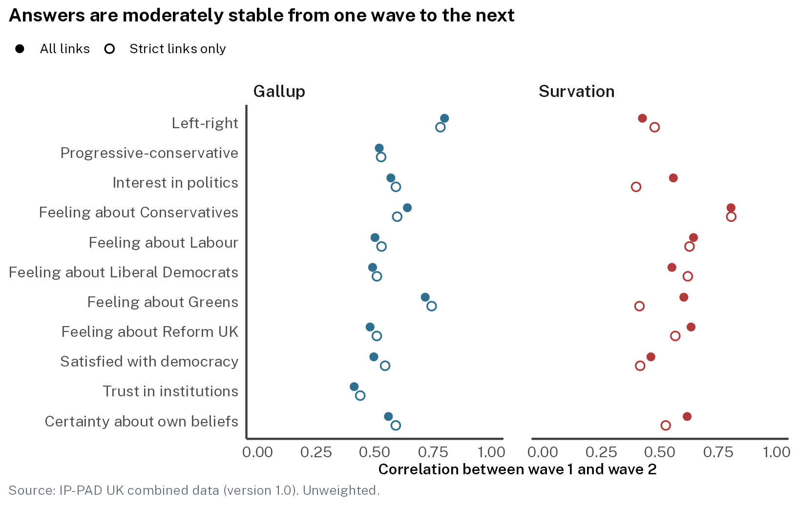

The same young people a year later
Panel
Change
How the views of young people interviewed twice changed between the two waves, and how stable their answers were.
Comparing young people of different ages says little about how the views of any one person develop. Both providers therefore re-interviewed some of their respondents. Gallup interviewed 55 young people first in May 2024 and again in 2025, and Survation interviewed 72 in August 2025 and again in September 2026. We ask how much their answers changed on average and how stable they were from one person to the next.
How certain the links are
Because the interviews were more than a year apart, a correctly linked respondent should be one or two years older in the second wave and report the same gender. Survation’s documented rule, which also accepts an unchanged age, is met by 52 of 55 Gallup links and 60 of 72 Survation links. A stricter rule requiring an age one or two years higher is met by only 48 and 39 links. Since Survation reached children through a parent’s panel account, a sibling may have answered some second interviews. We therefore show each result for all links and, as a check, for the strict links only.
Average change is small
Each dot is the average change from the first to the second wave, with a line for its 95% confidence interval, and open circles repeat it for the strict links only. To compare measures, all are expressed in points of a scale from 0 to 10. Survation did not ask about trust or the progressive-conservative scale in its second wave.
On most measures, the average answers barely moved. The clearest change is that the Gallup panel felt less warmly about the Labour Party, by 1.1 points (95% interval of the change −1.8 to −0.4) on the scale from 0 to 10, and this holds for the strict links. As the general election of July 2024 fell between the two Gallup waves, this could reflect Labour’s move from opposition into government rather than anything specific to young people. In the Survation panel, feelings about Labour rose by 0.64 points (95% interval of the change 0.02 to 1.25) and certainty about one’s own beliefs fell by 4.4 points (95% interval of the change −8.5 to −0.3) on a scale from 0 to 100, but neither change is clear with the strict links only.
Individual answers move more than the averages
The bars show how many young people moved by a given number of points on the left-right scale. The shaded band marks a change of at most one point.

Behind these small averages, individuals move in both directions. On the left-right scale, 53% of the Gallup panel and 54% of the Survation panel chose the same point twice, but 18% of the Survation panel moved by three points or more. Those who started near the ends of the scale tended to move towards the centre. The 11 Survation respondents who first placed themselves at 3 or below moved right by 2.0 points on average, and the 12 who started at 7 or above moved left by 2.2. Measurement error alone would produce this pattern, because an answer that is extreme partly by chance tends to be less extreme the next time. It therefore need not mean that these young people became more moderate.
How stable answers are
Each dot is the correlation between the answers in the two waves. A value of 1 means that everyone kept their position relative to the others, and 0 that the first answer says nothing about the second. Open circles show the strict links only.

Most correlations between the waves lie between 0.5 and 0.7, so young people largely keep their position relative to each other even though single answers vary. Left-right self-placement is the most stable measure in Gallup (0.80) but the least stable in Survation (0.42, or 0.48 with the strict links only). This could reflect that many of the 12 to 17 year olds in Survation do not yet have a settled sense of what left and right mean.
The panels are small, include only those who agreed to take part again and may contain some wrong links, so only large changes can be detected with confidence, and none of them tells us why views changed. The data page describes the panel links and how the surveys differ.